<ion-toolbar color="primary" *ngIf="!mobileQuery.matches">

  <ion-buttons slot="end">

    <ion-button (click)="presentPopover($event)">
      <ion-icon name="ellipsis-vertical" slot="icon-only"></ion-icon>
    </ion-button>
  </ion-buttons>

  <div class="containers" fxLayout="row" fxLayoutAlign="start center"  >
    <div class="logo" routerLink="/">
      
    </div>

    <div class="search-bar">
      <form>
        <input class="search-input" type="text" name="search" placeholder="Search...">
        <button type="submit"><span></span></button>
      </form>
    </div><!--search-bar end-->


    <div class="custom-nav-btn" slot="end">
      <nav class="desktop-nav">
        <ul class="nav-list">
          <li>
            <!--            <a [routerLink]="p.url" [class.active]="selectedPath === p.url" router-direction="forward">-->
            <!--              {{p.title}}-->
            <!--            </a>-->
            <a routerLink="/home" title="">
              <span></span>
              Home
            </a>
          </li>
          <li>
            <a routerLink="/messages" title="">
              <span></span>
              Message
            </a>
          </li>
          <li>
            <a routerLink="/my-profile" title="">
              <span></span>
              Profile
            </a>
          </li>
          <li>
            <a routerLink="/test" title="">
              <span></span>
              Notification
            </a>
          </li>
          <li>
            <a href="#" title="">
              <span></span>
              LeaderBoard
            </a>
          </li>

          <li>
            <a href="#" title="">
              <span></span>
              Friends
            </a>
          </li>
        </ul>
      </nav>

    </div>

  </div><!-- END of Navbar containers -->


</ion-toolbar>


<ion-toolbar color="primary" *ngIf="mobileQuery.matches">


  <ion-buttons slot="start">
    <ion-menu-button menu="main"></ion-menu-button>
  </ion-buttons>

    <div class="logo" style="width: 96px; " routerLink="/">
      
    </div>

  <ion-buttons slot="end">
    <!--    <ion-button class="notification-btn" slot="icon-only" fill="clear">-->
    <!--      <ion-badge color="danger">{{ 34 }}</ion-badge>-->
    <!--      <ion-icon name="notifications"></ion-icon>-->
    <!--    </ion-button>-->

    <div class="">
      <ion-button>
        <ion-icon slot="icon-only" name="notifications-outline"></ion-icon>
      </ion-button>

      <ion-button>
        <ion-icon slot="icon-only" name="search-outline"></ion-icon>
      </ion-button>
    </div>

    <ion-button (click)="presentPopover($event)">
      <ion-icon name="ellipsis-vertical-outline" slot="icon-only"></ion-icon>
    </ion-button>
  </ion-buttons>

</ion-toolbar>


